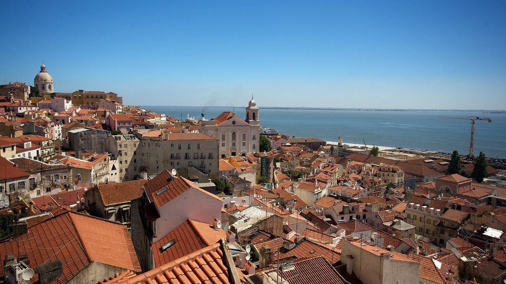

Race, Lisbon Tram Hills

Behind
Best +0:01
371W
Target 418 W-47 W
- Cadence
- 87rpm
- Heart
- 140bpm
- Speed
- 26.5km/h
Recover8 of 16
0:04
Next: · 0:30 at level 21
+1.2%
61 m climbed
3.36 km
18
Resistance / 32
Solo races your best-time ghost: position reads Ahead or Behind, and solo alone gets a Pause button. Frozen at 7:56.